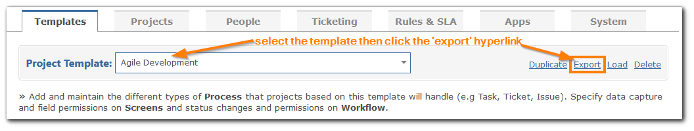

To export a Template use the Export link at the top right of the Template page.

When you export a Template you create a zip file of the Template metadata and images folders. This file can then be transferred between different Gemini instances allowing you to create a global definition of a project - it's process, status, workflow etc. - that can be shared across separate instances. The zip file created will have the same name as the Template Key.